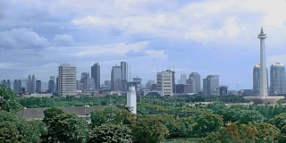
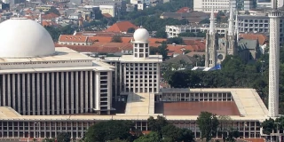
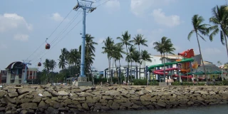

Jakarta
Jakarta
6.2088° S, 106.8456° E
a city that is sinking slowly over time
the fourth most populous metro area in the world
the capital of the country with the largest Muslim population
a city whose name means victorious
a city with many former Dutch colonial buildings

Jakarta, Indonesia
Jakarta, Indonesia
Gunawan Kartapranata - self-made,
Link
Java
Borneo

Masjid Istiqlal dan Gereja Katedral Jakarta
Istiqlal Mosque and Jakarta Cathedral
Dohduhdah
-
Own work
, Public Domain,
Link
Sunni
Shia
Taman Mini Indonesia Indah
Beautiful Indonesia Miniature Park
Gunawan Kartapranata
-
Own work
,
CC BY-SA 3.0
,
Link
1975
1995

Taman Impian Jaya Ancol
Ancol Dreamland
By
Midori
-
Own work
,
CC BY-SA 3.0
,
Link
North
South
Museum Nasional
National Museum
Photo by CEphoto, Uwe Aranas or alternatively © CEphoto, Uwe Aranas,
CC BY-SA 3.0
,
Link
Royal Batavian Society of Arts and Sciences
Royal Zeeland Scientific Society